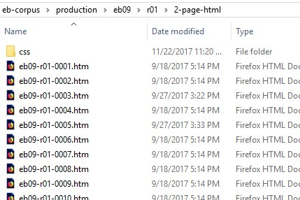
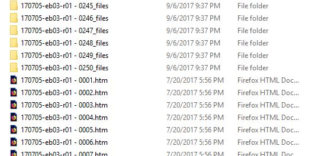

With 15-24 volumes of 1000 pages each, the four print editions are massive . They are
arranged alphabetically and so divided semantically by letter. We retain this
organizational scheme and further subdivide the entry letter sections into units of 250
pages to work on. Our folder structure reflects this. The print edition folders
(eb03, eb07, eb09,
and eb11) contain subfolders whose name begins with the entry
letter, followed by a two-digit number referring to the 250-page subsection:
r01, r02, r03 ….
Note: Print edition sections do not refer to page numbers in the print volumes. They
reference units of 250-pages beginning with the first 250 pages of the of the
entry-letter, the second 250-pages, and so on. This shorthand makes it possible to find
material without having to know the specific print volume and page number
details.
Figure: Print edition folder
The afr-user folder contains the custom dictionaries and user files
for use with AFR. There is one set of user files for each edition. See Using AFR/Settings. The other folders are
alphabetical divisions of the print edition containing the subdivisions
(r01, r02, r03
…).
Figure: Print edition section folder
Each print edition section folder (r01, r02, r03 …) contains
subfolders for the different types of production files we generate, preceded by a
numeral that reflects their position in the production sequence.
1-afr-project. These are the AFR “OCR Project”
folders used to organize the 250-page section. OCR project folders retain the text
boxes and language settings, and can be used to output text in multiple formats. The
first six digits of the filename indicate the creation date as yymmdd,
followed by edition, section, and the afr tag
(170705-eb09-r01-afr …). If there is more than one, always
open the most recent version.
Figure: 1-afr-project folder
Important: OCR project folders contain hidden files by default that are
essential to their retention of text boxes, etc. When creating an OCR project
folder, change the attribute value on the three hidden files to
unhidden to ensure that they are included whenever
the folder is copied. For more information, see Create an OCR Project Folder.
2-page-html. This folder contains the HTML files created by
AFR, with one file per print page (250 files). Later in the process, we generate
separate files for each entry, rather than each page, so we use folder names to
differentiate the page files from the entry files.
Figure: 2-page-html folder

HTML file names use the convention: output date (yymmdd), edition,
section, page-number (1-250). Thus the file
170705-eb09-r01-0005.htm contains the text of page 5 in the
first 250-page section of the letter "R" in the ninth edition, generated on June 5,
2017.
Note:Best Practice: AFR 14 adds spaces within the filenames that we do
not want. It also creates a separate CSS file for each HTML file nested within a
unique folder, all sharing the same root filename.

The file and folder names can be easily corrected using Bulk Rename Utility, and
the CSS folders can be gathered into a single folder, as in the previous
example.
3-page-tei. The HTML files are transformed into TEI-XML using
an XSLT script. These are still single-page files, with the same name as the HTML
files but a different files extension.
Figure: 3-page-tei folder
To learn about what happens next to these files, see the python folder.